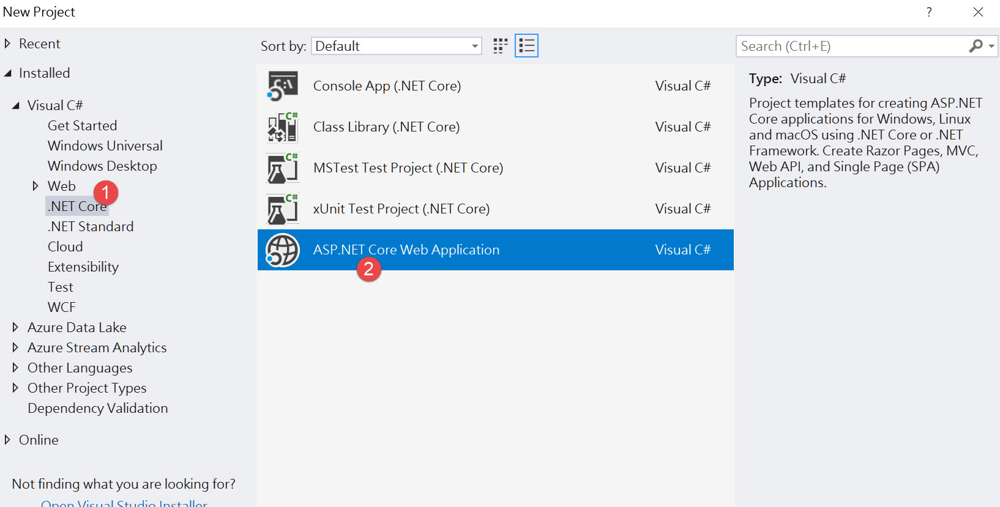
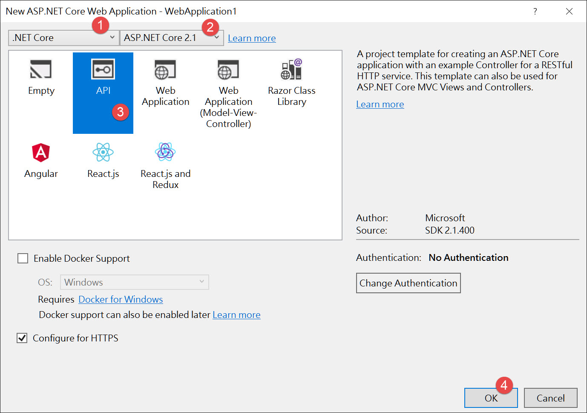
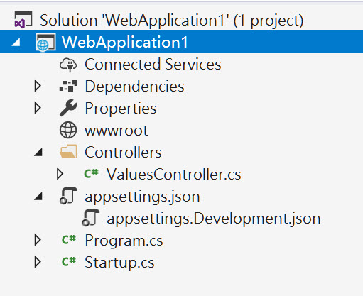
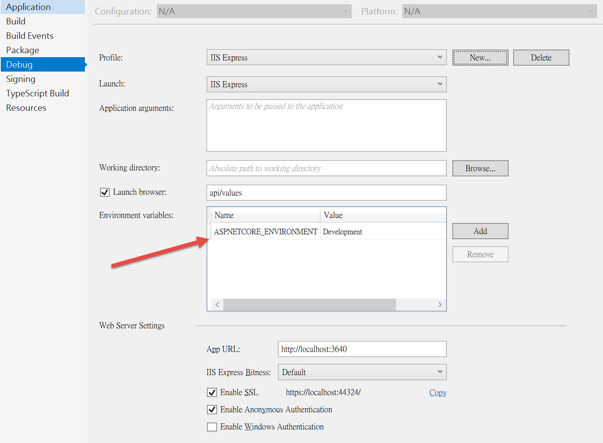

Asp.Net Core 2.1 目前已經正式上線了，跟2.0比較起來，架構上改了一點。
本篇藉由開發 Web Api 來說明。
Asp.Net Core Web Application
新增專案，選擇 Asp.Net Core Web Application

選擇 Asp.Net Core 2.1 以及 Web Api 專案

新開的專案架構其實非常簡單，如下圖

Program.cs
我們先從 Program.cs 說起。
開啟 Program.cs 如下
1 | public class Program { |
進入點很簡單，就是建立一個 WebHost，然後建立 Startup 物件，
這裡的 Startup 物件可以跟自訂，只要內容包含下列兩個方法
1 | public class Startup { |
Startup.cs
接著把重點移往 Startup.cs
1 | public Startup(IConfiguration configuration) { |
ConfigureServices 主要設置應用程式服務，也就是 Ioc 用到的各種服務。
Configure 則用來建立應用程式的要求處理管線，也就是中間層。
ConfigureServices 傳入 IServiceCollection 參數，
用來增加各種服務，目前內容很簡單，就是使用 mvc 服務而已。
Configure 傳入兩個參數，IApplicationBuilder 和 IHostingEnvironment。
前者用來增加各種服務，以後有機會再說明。
後者會傳入主機的環境變數，上面程式碼就是檢查是否為開發環境來決定要使用哪一個中間層。
環境變數與設定
專案的環境變數可以在專案的 Properties 內的 Debug 頁籤設定，如下圖

預設支援三種值 Development、Staging 和 Production，如果沒有設定 ASPNETCORE_ENVIRONMENT 變數則視為 Production。
因此在 Configure 內才可以直接呼叫 env.IsDevelopment() 來判斷是不是開發環境。
接下來看到專案架構有 appsettings.json，再專案總管點開此檔案還可以看到 appsettings.Development.json。
這兩個設定檔會在呼叫 CreateDefaultBuilder 時，根據環境變數決定是否載入，
一定先載入 appsettings.json，再尋找有沒有 appsettings.{ASPNETCORE_ENVIRONMENT}.json 相同名稱的檔案，有的話就載入，
兩份 json 檔同名的設定會被後來載入的蓋掉。
IoC
如果我們要加入自己的 IoC 服務，要在 ConfigureServices 內增加，
可以呼叫 services.AddTransient、services.AddScoped 以及 services.AddSingleton 這三個方法。
這三個方法的差別在於建立服務的生命週期不同，
Transient 會在每次需要載入物件的時候建立一個新的。
Scoped 會針對每次要求建立新物件。
Singleton 一旦建立後，就會一直存活。
中間層
當一個要求被送進來時，在 Controller 開始處理之前，會經過很多不同的中間層，
有的是權限控管，有的是錯誤處理。
要加入中間層，就在 Configure 內加入。
中間層是有順序性的，先加入的會先進入，但會後退出，如下圖

圖片來源Microsoft Doc
Asp.Net Core 2.1 的架構大概簡單介紹到這。